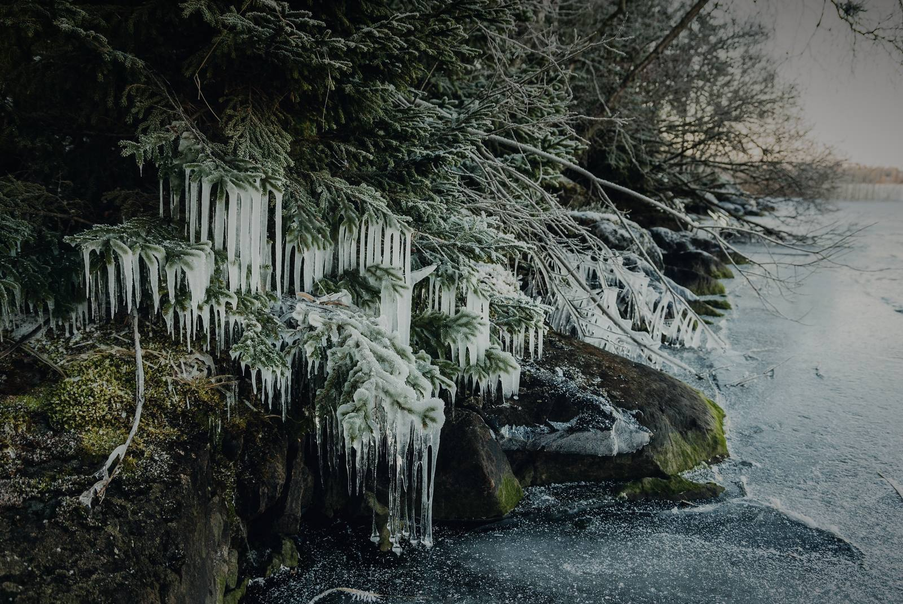

Toimisto
Toimisto
Viiden hengen arkkitehtitoimisto Tampereella. Toimisto perustettiin vuonna 2011.

Näsijärven rantaa Tampereella, helmikuu
Tarina
Aino Heinonen ja Mikko Vesterinen perustivat Lähde Arkkitehdit Oy:n Tampereella 1. maaliskuuta 2011. He olivat tutustuneet piirustuksen peruskurssilla vuonna 2002.
Ensimmäinen toimeksianto oli Ainon vanhempien rantasaunan korjaus Kangasalla. Löylyhuoneen oven korkeus mitattiin kolme kertaa, koska Ainon isä on 196-senttinen. Ovi on edelleen 2,05 metriä korkea, ja sauna on samassa käytössä.
Toimistossa on nyt viisi ihmistä. Suunnittelemme pientaloja, huviloita ja saunoja, enimmäkseen puusta, ja korjaamme vanhoja puurakennuksia. Otamme vuodessa 4–6 uutta toimeksiantoa. Syy on käytännöllinen: osakas piirtää jokaisen kohteen itse luonnoksesta työpiirustuksiin, eikä työtä anneta eteenpäin.
Pienoismallit kulkivat asiakkaille Mikon Volvon takapenkillä vuoteen 2014 asti. Silloin auto vaihtui farmariin, ja mallit mahtuivat vihdoin takaluukkuun.
Vuosi vuodelta
- 2008
- Aino Heinonen ja Mikko Vesterinen valmistuvat arkkitehdeiksi Tampereen teknillisestä yliopistosta.
- 2011
- Lähde Arkkitehdit Oy perustetaan 1. maaliskuuta. Ensimmäinen työ on Ainon vanhempien rantasaunan korjaus Kangasalla.
- 2016
- Sisustusarkkitehti Helmi Koivisto aloittaa. Toimisto alkaa suunnitella kiintokalusteet itse.
- 2018
- Rakennusmestari Pasi Mäkelä aloittaa. Korjauskohteiden kuntotutkimukset tehdään siitä lähtien toimistossa.
- 2019
- Toimisto muuttaa nykyisiin tiloihin Pellavakujalle.
- 2025
- Huvila Kallio valmistuu Ruovedellä kesäkuussa.
- 2026
- Joonas Rantala aloittaa arkkitehtina elokuussa. Toimistossa on viisi ihmistä.
Ihmiset
-
Aino Heinonen
Arkkitehti SAFA, osakas
Huvilat, saunat ja pääsuunnittelu
048 562 1918
aino@lahde-arkkitehdit.example -
Mikko Vesterinen
Arkkitehti SAFA, osakas
Pientalot ja vanhojen rakennusten korjaus
048 562 1919
mikko@lahde-arkkitehdit.example -
Helmi Koivisto
Sisustusarkkitehti SIO
Kiintokalusteet ja valaistus. Toimistossa vuodesta 2016
048 562 1920
helmi@lahde-arkkitehdit.example -
Pasi Mäkelä
Rakennusmestari (AMK)
Kuntotutkimukset ja työmaavalvonta. Toimistossa vuodesta 2018
048 562 1921
pasi@lahde-arkkitehdit.example -
Joonas Rantala
Arkkitehti
Lupakuvat ja työpiirustukset. Toimistossa elokuusta 2026
048 562 1922
joonas@lahde-arkkitehdit.example
Käytännön asiat
- Vastausaika
- Vastaamme viesteihin kahden arkipäivän kuluessa.
- Tapaaminen
- Tapaamme toimistolla tai tontilla. Sovi aika etukäteen puhelimella tai sähköpostilla.
- Ensimmäinen käynti
- Ensimmäinen tapaaminen on maksuton ja kestää noin tunnin. Hinta-arvio tulee viikon sisällä.
- Hinnoittelu
- Hinta sovitaan joko kiinteänä tai tuntiveloituksena vaiheittain: luonnos, lupa, työpiirustukset ja työmaa.
- Laskutus
- Laskutamme neljässä erässä, maksuehto 14 päivää. Laskut vain verkkolaskuna: verkkolaskuosoite 003731845170.
- Yritys
- Lähde Arkkitehdit Oy, Y-tunnus 3184517-0. Yritys- ja suunnittelijavastuuvakuutus on voimassa.
- Vapaat paikat
- Vuoden 2026 toimeksiannot on jaettu. Seuraava vapaa aloituspaikka on tammikuussa 2027.